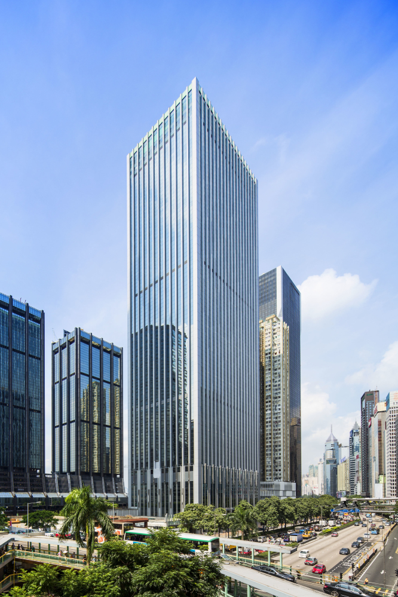

华润的前身是于1938年在香港成立的“联和行”。1948年联和进出口公司改组更名为华润公司。1952年隶属关系由中共中央办公厅转为中央贸易部（现为商务部）。1983年改组成立华润（集团）有限公司。1999年12月，与外经贸部脱钩，列为中央管理。2003年归属国务院国资委直接监管，被列为国有重点骨干企业。
1954年华润公司成为中国各进出口公司在香港总代理。在这一时期，华润的主要任务是组织对港出口，为内地进口重要物资，保证香港市场供应，贸易额曾占全国外贸总额的三分之一。1983年华润集团成立后，因应外贸体制改革的形势，企业逐渐从综合性贸易公司转型为以实业为核心的多元化控股企业集团。
2000年以来，经过两次“再造华润”，华润奠定了目前的业务格局和经营规模，涵盖大消费、大健康、城市建设与运营、能源服务、科技与金融五大业务领域，下设7大战略业务单元、19家一级利润中心，实体企业约2000家，在职员工42万人。直属企业中有7家在港上市，其中华润置地位列香港恒生指数成份股。
华润以“引领商业进步，共创美好生活”为使命，通过不断创新生意模式，打造产品和服务品牌，有效地促进了产业发展，为提高大众的生活品质作出了应有的贡献。目前，华润零售、啤酒、燃气、医药的经营规模在全国位居前列。电力、水泥业务的经营业绩、经营效率在行业中表现突出。华润置地是中国内地实力雄厚的综合地产开发商之一。雪花啤酒、怡宝水、华润万家、万象城、999、双鹤、东阿阿胶等是享誉全国的知名品牌。
为更好地适应多元化企业的发展，集团围绕发展模式、组织架构、公司治理等方面进行了一系列重大改革，在并购整合、企业重组、利用资本市场等方面形成了丰富经验，在战略管理、领导力发展、财务价值创造等总部建设方面建立了适合自身特色的管理模式。
目前，集团正在实施“十三五”发展战略，按照“做实、做强、做大、做好、做长”的发展方式，依托实业发展、资本运营的“双擎”之力，借助“国际化、+互联网”的“两翼”之势，通过提升资产质量、优化资本结构、调整产业结构、布局全球市场、开展研发创新、提升智能化水平六大举措，实现“跑赢大市、转型升级”的目标，为股东创造效益、为社会创造价值、为员工创造成长空间，成为受大众信赖和喜爱的全球化企业。